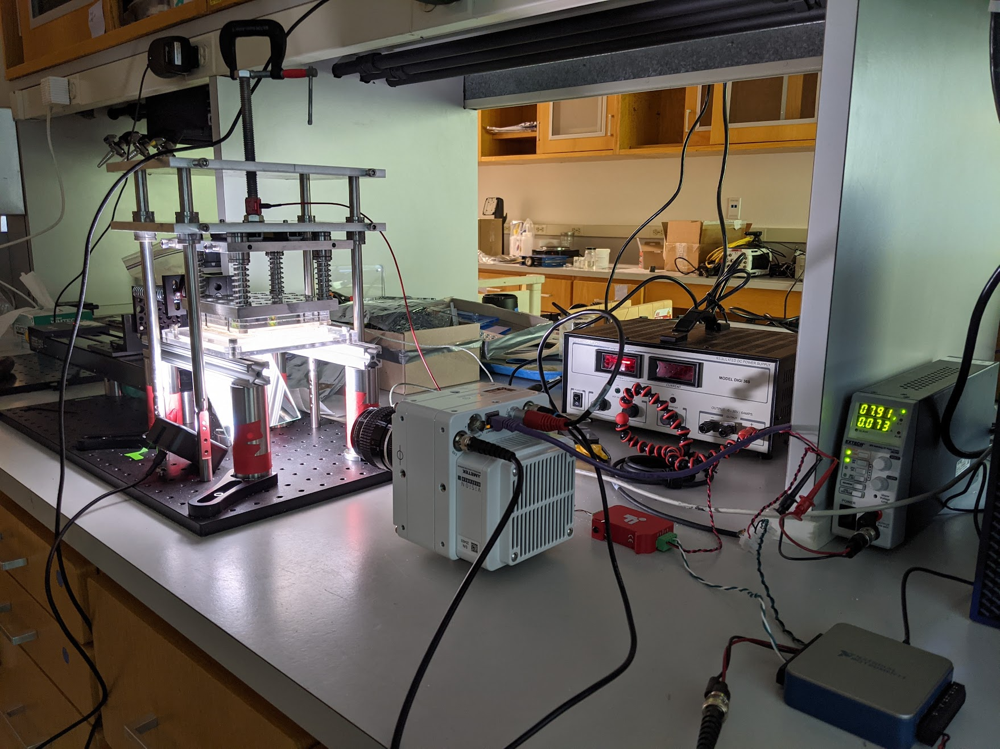
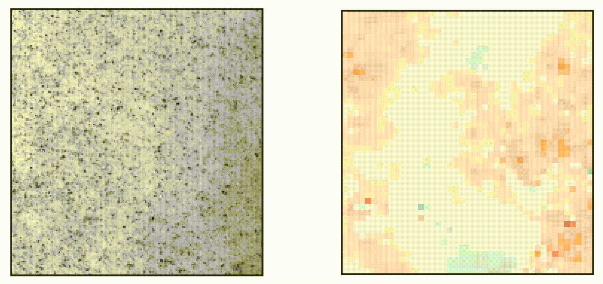
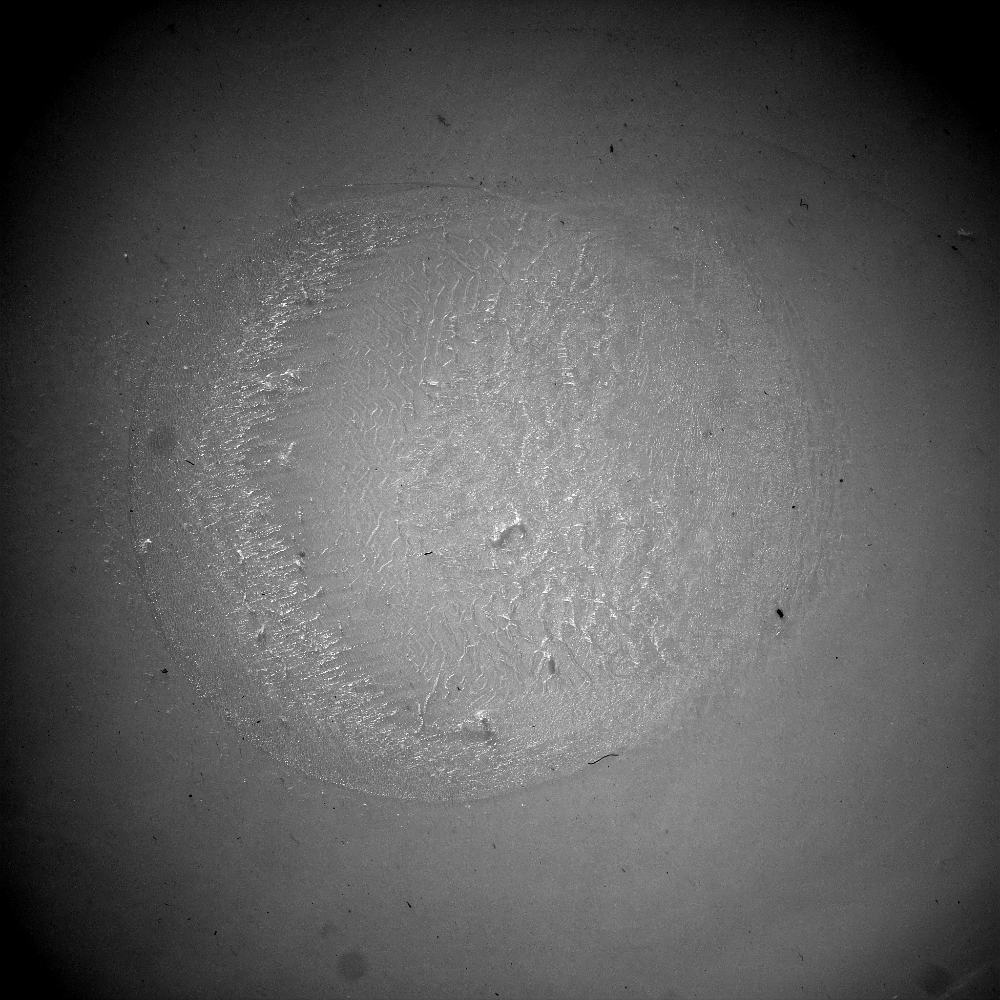
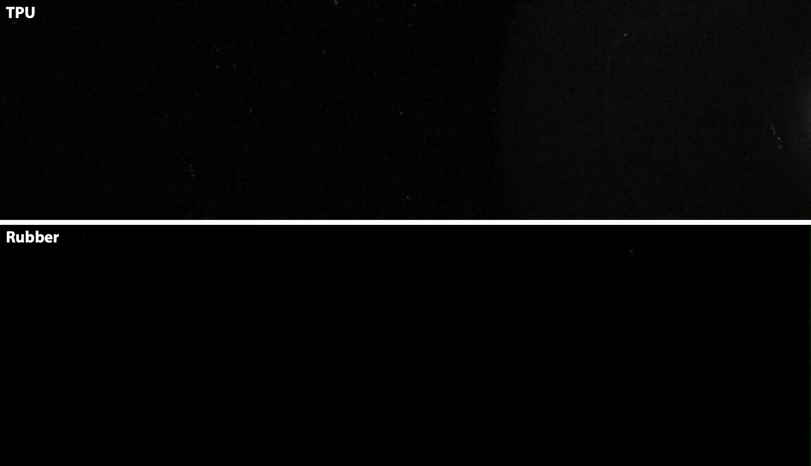
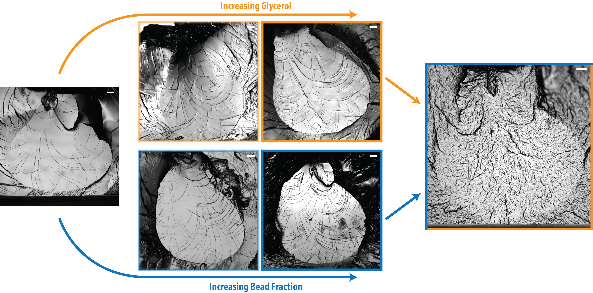
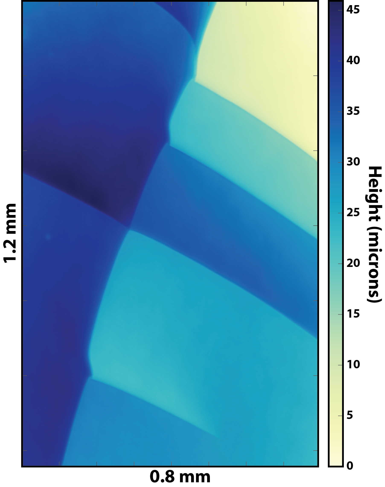

The behavior of faults, like many geophysical systems, is difficult to predict for three main reasons: 1) their dynamics span enormous spatiotemporal scales (microns to km, milliseconds to centuries) and thus are difficult to comprehensively measure, 2) faults have significant heterogeneity that can dominate observable behavior, and 3) they occur kilometers underground and thus are mostly observed indirectly. My research involves studying a fault made out of a transparent rubber that addresses each of these issues, allowing direct imaging of strains across the frictional interface, active control over normal stress heterogeneity, and that can undergo earthquake cycles in a few seconds. Most importantly, this system has slip events that do not fail the entire interface and instead stop because they run out of energy or run into a barrier. This means that the stress state on the fault is a function of both a complex geometry that evolves over slip, and the residual stress built over historical slip events, just like faults in the earth. As a result, this rubber fault also follows a broad range of statistical behaviors exhibited by faults including the Gutenberg-Richter relationship, Omori’s Law, and both magnitude and normal stress independent stress drops.
Using this system I have helped improve the interpretation of seismological stress drops, observed and understood a precursory “locking” phase that precedes slip events on faults and has predictive power over the size, timing, and location of future slip events, and have identified seismologically measurable parameters that can be used to evaluate the relative likelihood of earthquakes that grow through a single monotonic growth and decay phase and those that grow via the linking of multiple disparate asperities.


Many fractures have significant three-dimensional roughness, but it is not well understood how that roughness forms and what its connection is to material heterogeneity. A huge reason for this is that it is very difficult to image 3D fractures, especially with enough temporal resolution to understand their behavior. I have developed a new system that combines laser sheet microscopy and fast camera photography to measure growing fractures at ~15 x 15 x 15 micron resolution at 1000 volumes per second. These movies show how step-like instabilities on the fracture front grow and interact to generate roughness. The complex three-dimensional dynamics of these interactions lead to mechanical and topological constraints on three-dimensional fracture mechanics.
Elastomers are commonly used in a number of applications that involve high frictional stresses. This often leads to wear. Different types of elastomers exhibit markedly different frictional behaviors. Using a total internal reflection contact imaging system, combined with high speed photography, to observe hemispheres of different materials as they skid, we observe radically different dynamics depending on the material. Dissipating the friction energy in these systems involves highly coupled thermal, elastic, plastic, and fracture-like responses, and as a result is, surprisingly, an excellent model system for understanding wear behaviors during faulting.


Fracture surface roughness is an important parameter that can control the energy dissipation of a crack, dictate the frictional, seismic, and fluid transport properties of a broken material, and is an important consideration for enhanced oil recovery and geothermal reservoir stimulation. A major source of fracture roughness is the interaction between a crack and material heterogeneity, but this relationship is poorly understood since heterogeneity is a difficult parameter to control experimentally. I have developed two distinct methods to control heterogeneity in brittle hydrogels and have used them to show how the size and amount of heterogeneity affects fracture roughness, and how this can be easily predicted from simple statistical physics. Furthermore, at very high heterogeneity I can generate crack surfaces that resemble those seen in complex natural materials like rocks.

Fracture roughness is not uniformly distributed across a surface, and instead is usually localized. For brittle fractures, this localized roughness comes in the form of step-like instabilities that drift laterally along the growing front and leave in their wake a linear scar of relief known as a step line. I have shown that these steps have a characteristic asymmetric shape that determines their motion and interactions and that there are only three unique types of interactions that steps can have. These interactions follow straightforward rules that, taken together, can be utilized to explain and predict large-scale complexity in fractures.
